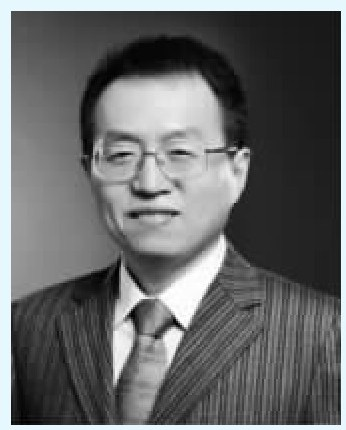
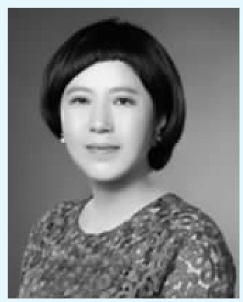

如何让身边未来的爱因斯坦和马云有足够的成长空间？如何让身边看上去天资有点平庸的孩子能够自信满满？如何让那些天资不上不下的孩子有所压力又不太过分？这是我们做家长面临的三个不可回避的问题，我们怎么做、怎样做好，就是我们今天要讨论的问题。
一般讲家庭教育都是直奔家庭教育而来，比如讲怎么教孩子。十多年前开始做家庭教育，我们就强调一个理念，家庭教育以家庭建设作为前提。而且，家庭关系里的主轴是夫妻关系，如果夫妻关系比较差，相当于一个企业出现了债务甚至濒临破产，就很难给别人提供金融帮助。很难，不是做不到。我们今天讲的课程里有两个案例，夫妻关系真出了问题，但是他们克服困难来教育自己的孩子。不过这是个例，在一般意义上，应当建设优良的家庭关系尤其是优质的夫妻关系，如果有这样的关系家庭教育里就可以说事半功倍，如果没有良好的家庭关系，家庭教育往往事倍功半、非常困难。所以我们要强调：建设好自己的家庭。
当然建设好我们自己的家庭之后，并不等于家庭教育已经自然而然到位了，所以我们进入今天的主题“三心”——安心、童心、心连心。